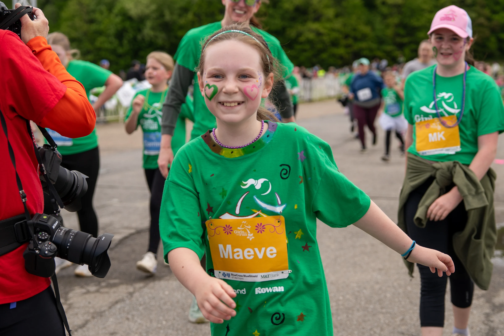
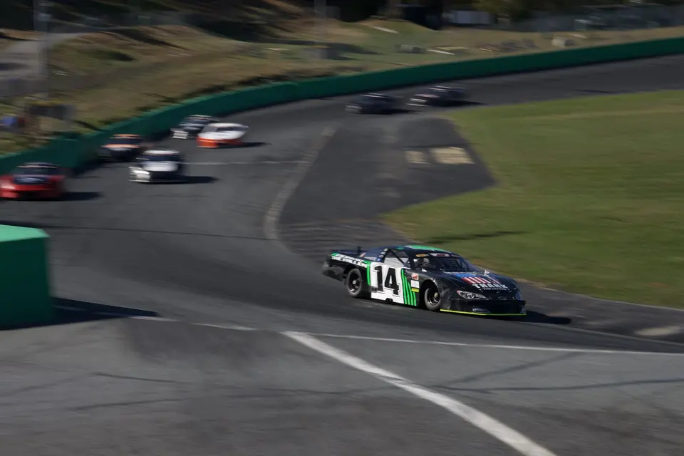
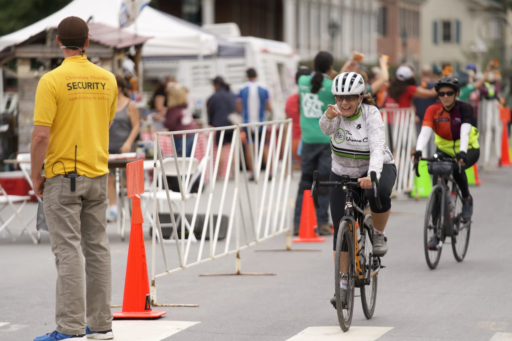
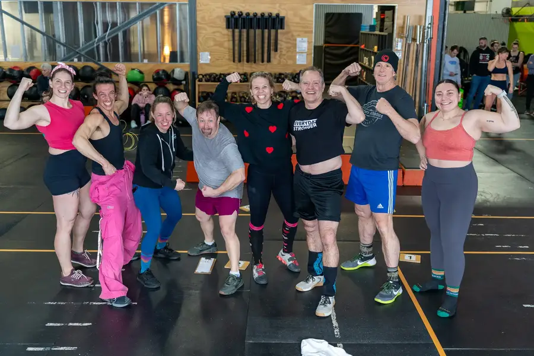

Selected work
Campaigns and series built around a useful story.
The organization provides the context. The work itself provides the structure.
Campaigns and series

Blue Cross Vermont · 2026Girls on the Run 2026
A complete 185-image documentary gallery from the Vermont 5K.
 Blue Cross Vermont · 2026
Blue Cross Vermont · 2026
Corporate Cup 2026
Nine photographs from the Blue Cross team, the course, and the finish in downtown Montpelier.
 Blue Cross Vermont · 2026
Blue Cross Vermont · 2026
Flight Paths
A video series about the people finding their way into Vermont’s growing aviation sector.
 EastRise and Blue Cross Vermont · 2024–2026
EastRise and Blue Cross Vermont · 2024–2026
Portraits and People
Leadership, board, and staff portraiture made to feel human, consistent, and specific to the organization.
 EastRise and Urban Rhino · 2025–2026
EastRise and Urban Rhino · 2025–2026
Member Stories and Campaign Films
Eleven films, including a nine-spot member-story series I produced with Urban Rhino.
 Green Mountain Community Fitness · 2026
Green Mountain Community Fitness · 2026
Sweat-Heart Throwdown
A Valentine’s Day competition photographed from warmup through the last exhausted finish.
 VSECU and EastRise · 2019–2025
VSECU and EastRise · 2019–2025EastRise Social
51 archived social posts and memes treated as one campaign and project.
 VSECU and EastRise · 2019–2025
VSECU and EastRise · 2019–2025
EastRise Writing
The complete archive of 53 financial education and Vermont consumer articles.
 EastRise · 2025
EastRise · 2025
Wheels for Warmth 2025
A practical public-service campaign that turned donation instructions into the month’s strongest-performing content.

EastRise · 2025Taylor Hoar Racing 2025
A season-long sponsorship story told across race days, portraits, social posts, and local history.
EastRise · 2019–2025EastRise Photography
165 publicly published photographs organized by shoot, campaign, and series.
 Green Mountain Community Fitness · 2025
Green Mountain Community Fitness · 2025
Bike Fitting
A close, practical photo story about expertise, adjustment, and the small details that help a rider fit the bike.
 EastRise · 2024
EastRise · 2024
EastRise Launch Campaign
Commercial-set photography and public brand imagery built to introduce a new credit union.

VSECU and EastRise · 2021–2024Credit Union Website Redesigns
Content migration, quality assurance, image direction, photography, and coding support across two PixelSpoke redesigns.
Client and institutional work
 Blue Cross Vermont · 2026
Blue Cross Vermont · 2026
Blue Cross Vermont
Photography, community storytelling, video, social content, and digital infrastructure.
BETA Technologies · 2026
BETA Technologies
Documentary video about a Vermont aviation career built through an unexpected route.

Green Mountain Community Fitness · 2025–2026Green Mountain Community Fitness
Photography built around the people, expertise, and communities that make a fitness center feel like a place to belong.
VSECU and EastRise · 2019–2025
EastRise Credit Union
Six years of audience strategy, brand photography, campaigns, writing, video, and two website redesigns.
Earlier work
Live broadcasts
Hosting, creative direction, and technical production for major public and employee broadcasts.
VTDigger · 2018–2019Membership conversion
A simpler donation page and a disciplined testing program increased membership conversion by 137%.
Fairbanks Museum & Planetarium · 2015–2018Planetarium growth
Programming, operations, staff development, and better systems helped planetarium revenue grow from $13,359.80 to $31,363.40.